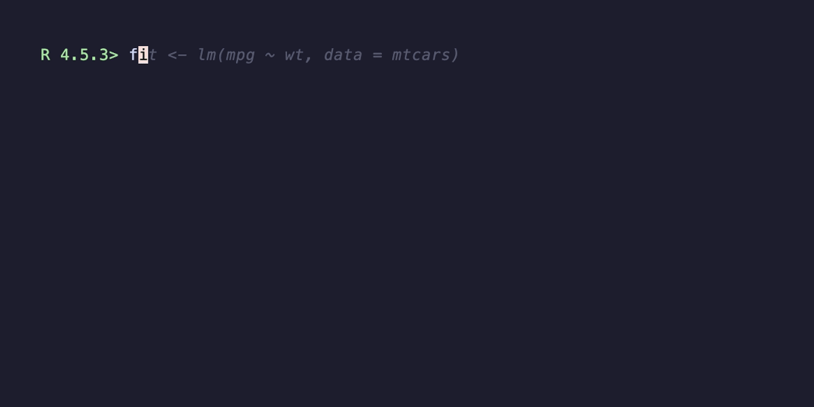
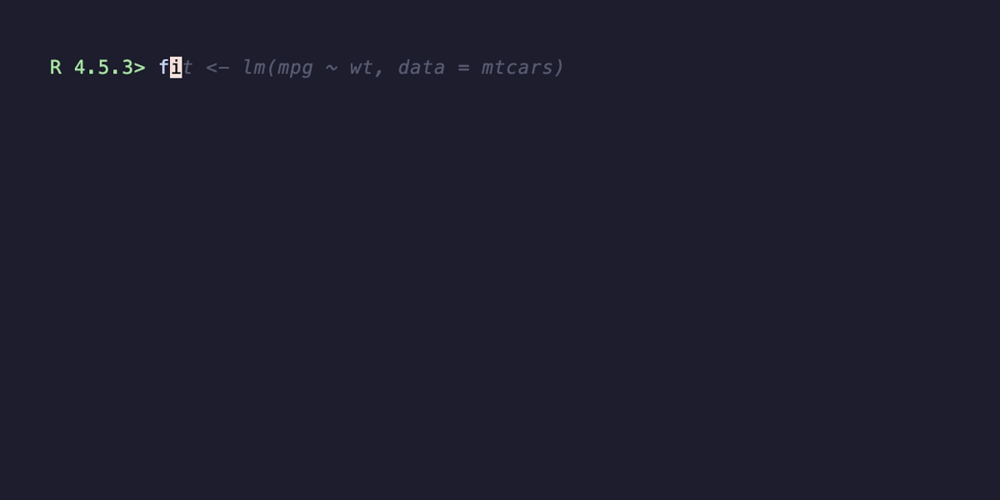

Pacing and feel: making a recording feel human
pacing-and-feel.RmdA record_demo() call with default arguments produces a
recording that works — but it can feel mechanical. Every
keystroke is the same length, every line follows the previous with the
same beat. Real humans don’t type that way, and a good demo doesn’t
either. This vignette walks through the four arguments that change the
feel of the recording without changing the code being demoed.
The four levers
record_demo() exposes four pacing controls:
typing_speed— the delay per character."60ms"is the default; faster ("40ms") is snappier but reads as urgent, slower ("100ms") reads as deliberate.line_pause— the sleep after each line, while output renders. Default"500ms". Bump it up for lines whose output you want the viewer to read (summary(),str()); leave it short for setup lines.paragraph_pause— unset by default. When set, blank lines in your expression become a sleep of this duration instead of being typed as empty lines. Use it to give viewers a beat between thought units.typing_speed_jitter— a number in[0, 1]. With jitter, the per-line typing speed is sampled uniformly within±jitteroftyping_speed. The default0means every line types at exactlytyping_speed;0.3means each line is somewhere between 70% and 130% of the base speed. Setset.seed()first if you want reproducible jitter.
These compose. The recipes below show the difference each makes.
Side by side
The same five-line demo, recorded three times with different pacing.
Mechanical: defaults, no jitter, no paragraph beat
record_demo({
fit <- lm(mpg ~ wt, data = mtcars)
summary(fit)$coefficients
predict(fit, newdata = data.frame(wt = c(2, 3, 4)))
}, output = "demo.gif", typing_speed = "60ms")
The blank lines come through as empty Type "" directives
— the recording moves on the next line immediately, no breathing
room.
Jittered typing speed
set.seed(1)
record_demo({
fit <- lm(mpg ~ wt, data = mtcars)
summary(fit)$coefficients
predict(fit, newdata = data.frame(wt = c(2, 3, 4)))
}, output = "demo.gif",
typing_speed = "60ms",
typing_speed_jitter = 0.3)Each line types at a slightly different cadence. The recording reads less like a TTY playback and more like someone working at the prompt.
Jittered + paragraph pause
set.seed(1)
record_demo({
fit <- lm(mpg ~ wt, data = mtcars)
summary(fit)$coefficients
predict(fit, newdata = data.frame(wt = c(2, 3, 4)))
}, output = "demo.gif",
typing_speed = "60ms",
typing_speed_jitter = 0.3,
paragraph_pause = "1s",
line_pause = "600ms")
The blank lines now produce a one-second beat instead of being typed
as empty lines. The viewer has time to actually read the
summary(fit)$coefficients output before the next block
starts.
A default kit
If you don’t want to tune from scratch each time, this is a good all-purpose starting point:
record_demo(
...,
typing_speed = "70ms",
typing_speed_jitter = 0.25,
line_pause = "600ms",
paragraph_pause = "900ms"
)It’s slightly slower than the defaults, has gentle per-line variation, and treats blank lines as thought beats.
When the defaults are wrong
-
Dense computational output (model summaries, large
data previews): bump
line_pauseto"1s"or"1.5s"so viewers can actually read it. -
Short snippet (3–4 lines, on a tight file-size
budget): drop
typing_speedto"40ms"and skip the jitter — speed wins over realism here. -
Walking through a stepwise tutorial:
paragraph_pause = "1.5s"and a moderate jitter give viewers time to anticipate each step.
Reproducibility
typing_speed_jitter > 0 calls runif()
once per line. Two back-to-back recordings at the same jitter value will
look slightly different. If your CI workflow re-records as part
of release prep and you want bit-stable retries, call
set.seed() before record_demo(). The frame
timing inside vhs is still inherently variable (it’s a real terminal
recording), so “reproducible” here means content-stable, not
byte-stable.
See also
-
?record_demo— full argument reference. -
vignette("recording-for-readme", package = "vhsR")— where to put the GIF once you’ve recorded it. -
vignette("tape-scripts", package = "vhsR")— tape-level pacing for when these args aren’t enough.